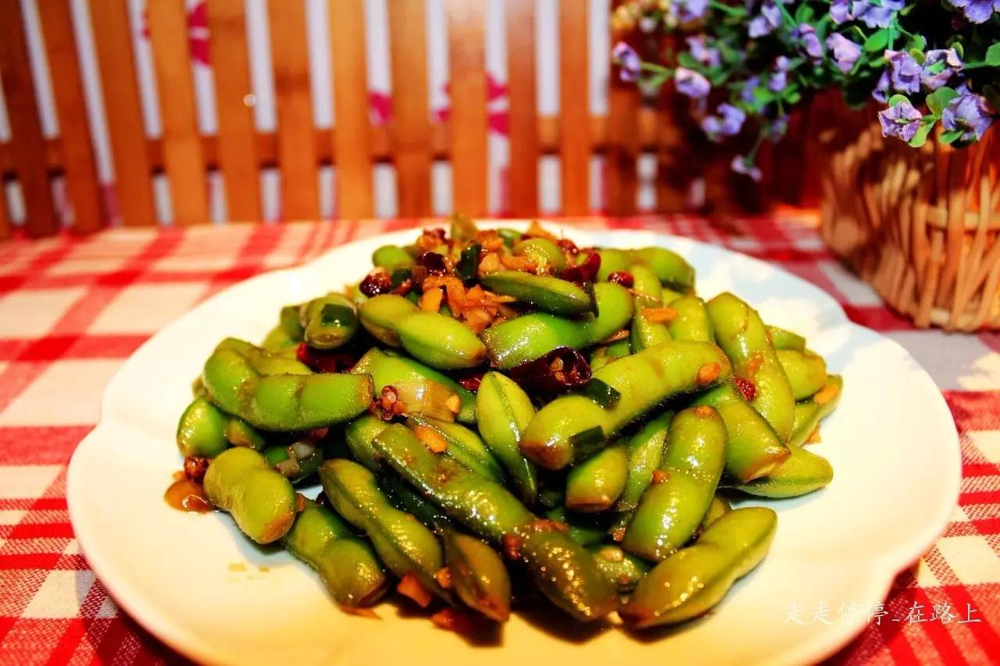
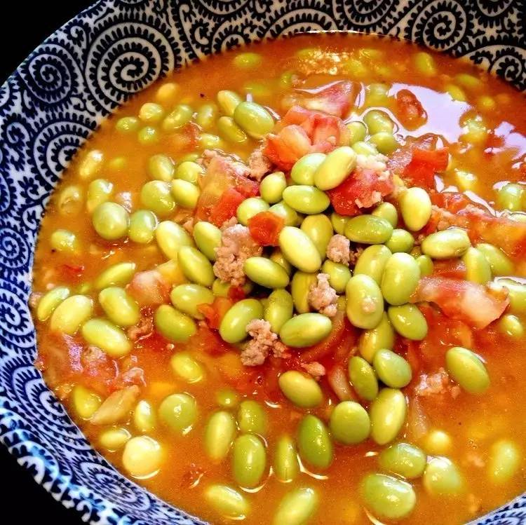
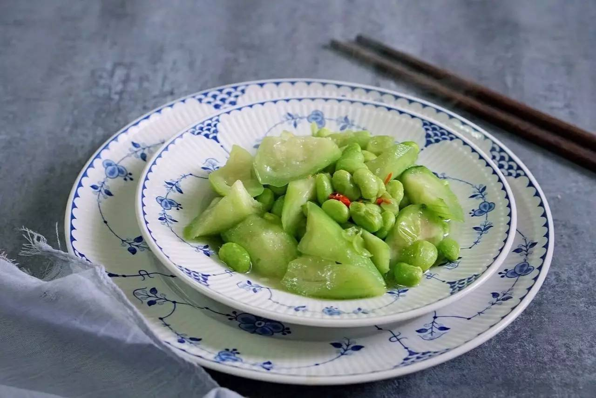

每日推荐

最近去逛菜场，正是毛豆上市的时候。半人高的透明塑料袋，里面装满嫩绿色的、毛茸茸的毛豆荚。卖菜的老板，搬张小板凳坐下，开始娴熟地剥毛豆：一掐、一拧、一拨，新鲜的毛豆子就落下来了。那些脆嫩的小豆子，边缘还有一些残留的白衣，让人看着就忍不住想象它的口感。
可惜，大多数人家的毛豆做法单调：多是做成咸味卤毛豆。卤毛豆，空口吃、下酒吃，都是极好的。可惜吃久了就觉得没意思，味道单一，有些辜负了应季的新鲜毛豆。
厨房君为你整理了几道做法简单的毛豆新吃法，试试看毛豆的其他口味吧～
－夏日爽口凉拌毛豆－
by 走走停停_在路上
这道菜的口味，读名字就知道了。香辣、爽口、凉飕飕。用时髦的话说，就是“好吃炸裂”的感觉！
 Photoby 走走停停_在路上
－用料－
毛豆一斤
葱姜蒜适量
花椒干红椒（喜欢辣可多放）适量
盐适量
麻辣鲜（可有可无）少许
芝麻油辣椒油少许
食用油适量
－做法－
提前洗切好葱姜蒜（全都切碎末）。
毛豆用水冲洗干净，接一盆水加上一勺盐浸泡十到十五分钟，然后用手稍稍搓洗毛豆上面的细毛毛，水冲过后剪掉两头（方便入味）。
锅中放入适量水，能将毛豆全部浸透为宜，水开后放入毛豆，倒少许油（保持毛豆的脆绿色），加一小勺盐，煮五到六分钟，捞出毛豆用凉开水或纯净水冲凉。
冲凉后的毛豆倒入大碗中，加生抽、蚝油、香油、香醋、麻辣鲜（没有可不加）稍拌。
锅内放适量食用油，油热后入花椒和红椒爆香。之后加入姜蒜末爆出香味，此时如果有红油可加入，倒入一点生抽，稍稍翻炒撒入葱花关火。
出锅后倒入预先拌好的毛豆内，拌匀装盘。
煮毛豆时一定记得倒入一点点油，颜色保持绿色不发黄。
毛豆剪掉两头更入味哦。
凉拌好的毛豆没完吃封好入冰箱一晚味道更好，调料的味道全进去了。
－肉末番茄烧毛豆－
番茄的开胃鲜香、毛豆的豆香，再加一点肉末的提携，整道菜是极其下饭的口味。一定要留出多多的汤汁，舀在白米饭上，拌着吃。
－用料－
新鲜毛豆半斤
半肥瘦猪肉末二两
盐
料酒
生抽
－做法－
肉末用料酒、少量生抽略调匀，生抽不要太多否则颜色太深； 番茄切小丁，不嫌麻烦可去皮后切丁； 鲜毛豆洗净沥干。
锅中下油，下姜末炒出香味。下肉末，将肉末炒散发白。放入鲜毛豆翻炒拌匀。加入清水，直至淹过毛豆大约 0.5 公分。
开大火将水烧开后，盖上锅盖转小火，焖大约10分钟。打开锅盖，尝尝看毛豆是否软熟，如果喜欢稍微硬一点的可以稍微缩短一两分钟，喜欢软烂些的可以延长一两分钟，根据各家口味调节。
豆子焖到自己想要的程度后，加入番茄丁，放盐，让番茄尽快出水。开大火，加速将番茄炖软顺便开始收汁。
汁水强烈建议不要收的太干，多留一些拌饭非常鲜美。可以尝一尝，如果番茄不够甜比较酸的话加一点糖调味。到觉得合适的时候关火出锅即可。
焖锅之前的水最好一次加够，如果中间必须添加，建议用开水，不要用凉水。
番茄一定不要先放，先放番茄的话，其酸性会使得豆子难以软熟。
放了番茄再放盐比较好，这样盐可以让番茄的汁水加速释放。
番茄和毛豆都极为鲜美，可以不加味精鸡精之类了。
－熏毛豆－
熏毛豆，又称炙毛豆。是江南一带的家常小吃，上海朱家角的熏毛豆尤其出名。每到毛豆上市时，大人们就开始忙活，挑大而扁的扁青毛豆，炒煮熟后放在筛网上，用煤球炉的文火微熏烘几小时……熏炙好的毛豆碧绿生青，微咸鲜香，咬劲十足。一粒一粒往嘴里塞，停不下来。

－用料－
毛豆
糖
盐
味精
－做法－
洗净双手，把毛豆从毛豆荚剥出，全部剥好倒入锅中，根据各人的喜好放入糖，味精，盐，用铲子铲拌均匀后开中火（注意是干炒不放一滴水，因为它会自己炒出糖水来）。
不停铲炒毛豆。炒至毛豆煮出来的糖水略微有点收干，毛豆断生就马上出锅！多炒毛豆会变黄！
倒入筛网摊平毛豆，架在传统的蜂窝禖炉子上，用微火微熏毛豆 3～4小 时，其间不停翻拌毛豆（没有煤炉，也可以用烤箱代替）。
炒毛豆时不放一滴水，毛豆和糖，盐一起炒制时自己会先岀水的，熏烘时要不停地翻拌。
我是用的古镇人民世世代代传承下来地传统方法：熏炙。你可以尝试用少一点的毛豆炒熟后烤箱低温低热烤制（50度～80度之间，烘烤50～70分钟左右）。
炒毛豆时糖和毛豆的比例是根据自己的喜好，喜欢甜多放糖，喜欢椒盐味适量多放一点盐。
－清炒毛豆虾仁－
虾仁和毛豆的搭配，浅红配嫩绿，色彩很诱人。两种鲜味互相提携，夏日傍晚，搭粥小菜的首选。
－用料－
新鲜毛豆200 克（去壳的）
鲜虾半斤
生粉一茶匙
盐适量
糖适量
油适量
－做法－
锅里放水，量不用太多，稍微没过毛豆即可，放点油，放入毛豆。大火煮开后中火煮 3 分钟即可。捞起沥干水分。
鲜虾去壳（尾巴留下，保持漂亮外形），去除虾线后，洗干净虾仁。
腌制虾仁：先放盐和生粉拌匀，再放油拌匀。
烧热炒锅，放油，油温只需四成热，便立即滑入虾仁迅速炒散。待虾仁颜色转红，放入毛豆，盐和糖，迅速翻炒几下即可。
－小贴士－
煮毛豆的时候放少许油，是为了保持颜色青绿。如果喜欢吃软一点的毛豆，也可以再煮它几分钟。
关于虾。活蹦乱跳的基围虾，味道鲜甜肉质紧致爽口，买它不错。沙虾稍逊。 去除虾线并不难，只需用小刀沿虾线处划一刀下来，虾线就可以轻易用手拿出来。 身旁放碗水，把粘在手上的虾线去掉便可继续弄下一只。
－丝瓜炒毛豆－
by凉爱
小满时节，厨房君推了一篇明日小满，吃丝瓜炒毛豆。
此时的丝瓜，喝足了水，最鲜润，和应季的软糯毛豆一起炒，更是鲜美。

－用料－
丝瓜1 根
毛豆100~150 克
盐适量
辣椒2 只
植物油适量
－做法－
毛豆剥壳。丝瓜刨皮，洗净切滚刀块。
热锅冷油，放入干辣椒，油温后放入毛豆煸炒至变色。
加入丝瓜块翻炒。
加入适量盐少许水，大火煮至丝瓜软糯再加适量味精翻匀出锅！
－小贴士－
毛豆先下锅煸炒，因为毛豆比丝瓜熟得慢。